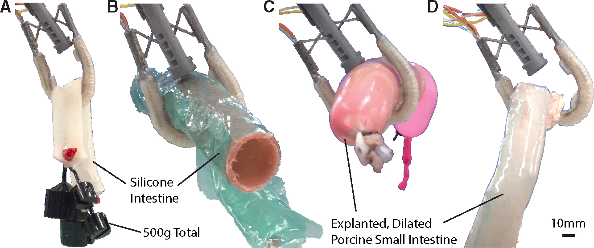
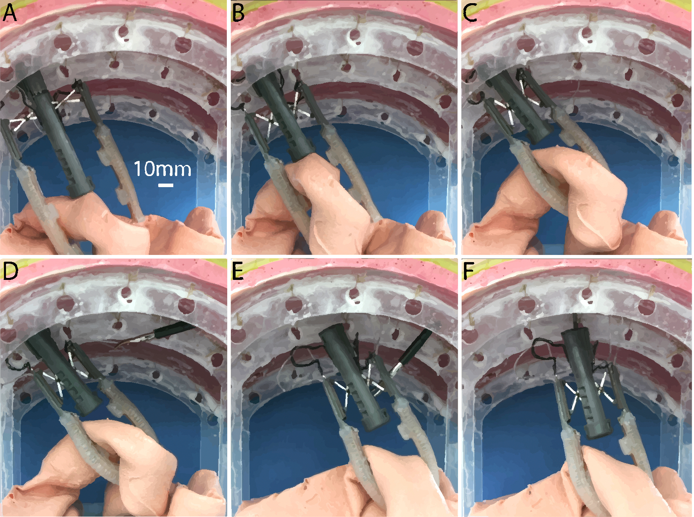

Overview
Traditional rigid laparoscopic graspers can concentrate force on fragile bowel tissue and are difficult to use on pathologically dilated intestine. The MAIR enters the abdominal cavity in a collapsed configuration, expands after insertion, and uses two fiber-reinforced soft actuators to envelop the intestine rather than pinch it. Its detachable end effector can subsequently be anchored to the abdominal wall as a passive retractor.
How It Works
Isolate
A distal suction unit establishes an initial hold and separates the target intestinal segment from surrounding tissue.
Deploy
A miniaturized scissor-lift mechanism expands after insertion through the 18 mm trocar and positions the two soft actuators.
Grasp and Sense
The fiber-reinforced soft actuators inflate around the bowel while embedded magnetometric sensors monitor tissue-interaction forces.
Detach and Retract
The end effector is detached and secured to the abdominal wall through a hybrid magnetic-needlescopic anchoring mechanism.
Device Design

The instrument combines a distal suction unit, two fiber-reinforced soft actuators, soft magnetometric sensors, and a miniaturized scissor-lift mechanism. Independent horizontal and vertical actuation allows the surgeon to adjust actuator extension and separation after deployment.
Results
500 g
Weighted intestine surrogate maintained during grasp testing
>3 cm
Air- and water-dilated ex vivo intestines successfully grasped
1 h
Ex vivo tissue held with no visible trauma after inspection
The soft force sensors achieved mean absolute errors below 1 N during validation, while the device maintained grasps across weighted, anatomically constrained, and pathologically dilated specimens.

Passive Retraction

After the soft actuators establish a grasp, their pneumatic tubing is sealed and the end effector is detached from the instrument body. A magnetic-needlescopic mechanism then anchors the end effector to the abdominal wall, maintaining retraction while freeing the original laparoscopic access port and surgical personnel.
Scope: The reported validation is preclinical and consists of in vitro and ex vivo experiments. In vivo, cadaver, and multi-user studies remain future work.
Citation
Lorenzo Kinnicutt, Leah T. Gaeta, Jacob Rogatinsky, Jungjae Lee, Amy Cameron, Amartya J. Naik, Donald T. Hess, and Tommaso Ranzani. “A Soft Robotic, Modular Laparoscopic Grasper for Atraumatic Retraction of the Small Intestine.” Device 2 (2024): 100560. Published October 18, 2024.
@article{kinnicutt2024soft,
author = {Kinnicutt, Lorenzo and Gaeta, Leah T. and Rogatinsky, Jacob and Lee, Jungjae and Cameron, Amy and Naik, Amartya J. and Hess, Donald T. and Ranzani, Tommaso},
title = {A Soft Robotic, Modular Laparoscopic Grasper for Atraumatic Retraction of the Small Intestine},
journal = {Device},
volume = {2},
pages = {100560},
year = {2024},
doi = {10.1016/j.device.2024.100560},
publisher = {Elsevier}
}